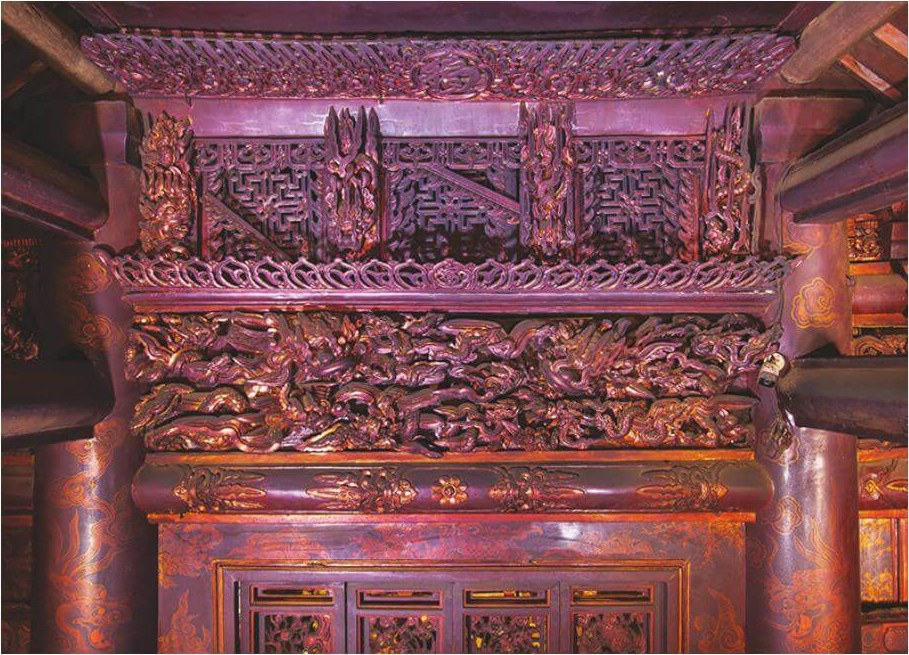
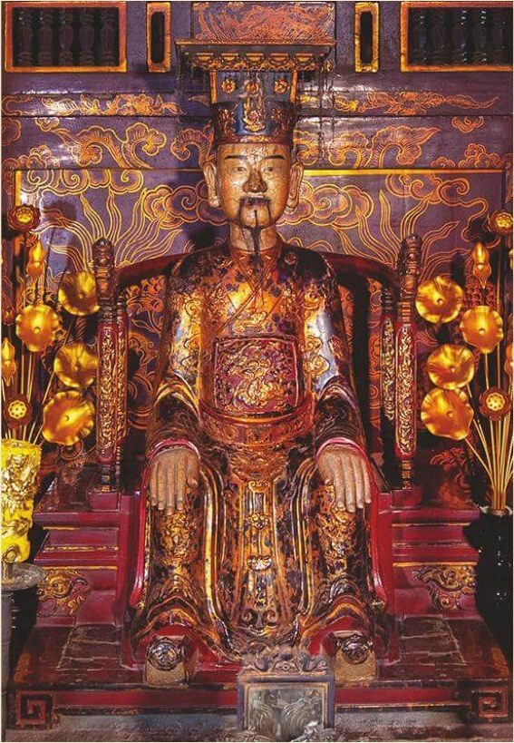
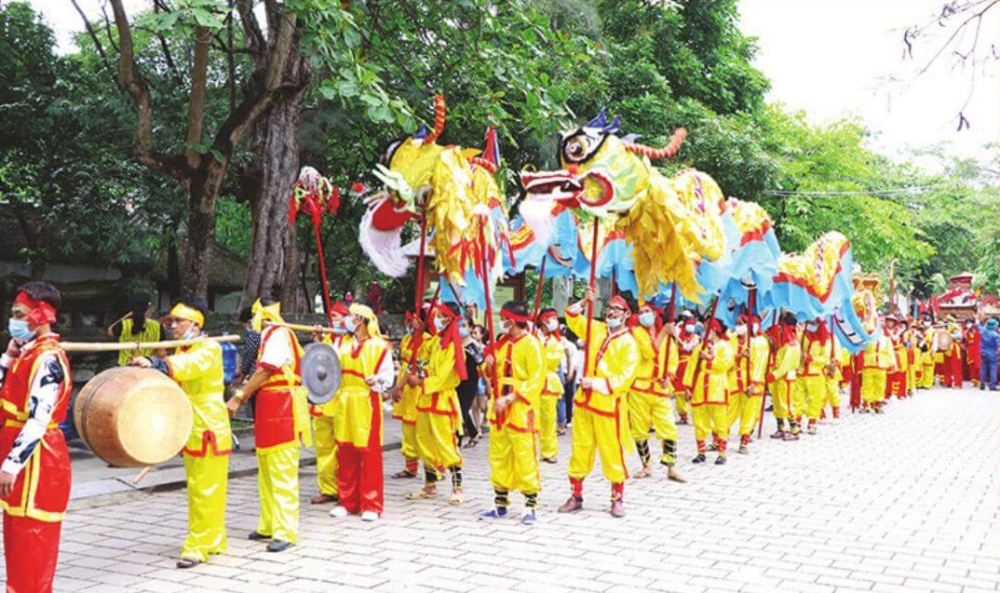

CỐ ĐÔ HOA LƯ
딘 왕 사당

딘 띠엔 황 왕 사당은 17세기에 옛 궁궐의 옛터 위에 세워졌으며, 사당의 건축 구조는 '내공외국(Nội công ngoại quốc: 안은 工자, 밖은 國자 형태)' 양식입니다.
사당의 회랑은 조각 예술의 전시장이기도 합니다. 판벽에는 짐승을 사냥하는 용, 구슬을 머금은 용, '옥(玉)' 자를 향해 마주 보는 두 마리 용, '만(Vạn)' 자를 향해 마주 보는 용 등의 소재가 장식되어 있습니다.

19세기 석조 조각 예술 역시 연꽃 문양의 옛 돌기둥 받침과 돌 문지방에 뚜렷하게 나타나 있습니다. 장인들은 정교한 투조 및 양각 기법을 통해 '사령(용, 기린, 거북, 봉황)', '사군자(소나무, 국화, 대나무, 매화 또는 매화, 난초, 국화, 대나무)', '물놀이하는 용(Long hí Thủy)', '목숨 수를 머금은 용(Long hàm Thọ)', '팔보(Bát bửu)' 등 다양한 장식 소재를 표현했습니다. 특히 장인들은 동(Đông) 다리, 덴(Dền) 다리, 탑사(Chùa Tháp), 응앙 정자(Đình Ngang) 등 호아루의 유명한 풍경도 조각해 넣었습니다.

내전은 '공(Công)' 자 구조로 배당(Bái đường), 소향(Thiêu hương), 정궁(Chính cung)의 세 건물로 이루어져 있습니다.
배당은 공동(Công đồng, 여러 신)을 모시는 곳입니다. 이 건물에는 딘 띠엔 황 왕이 베트남 역사상 처음으로 민족을 위한 자주적이고 통일된 기반을 열었음을 찬양하는 '정통시(Chính thống thủy, 정통이 시작되다)'라는 큰 현판이 걸려 있습니다. 이 현판은 선제의 천추의 공로를 기록한 금빛 명패와 같습니다.
소향 건물은 딘 왕조의 문무백관을 모시는 곳으로, 이곳에는 용이 조각된 매우 아름다운 아치형 나무 칸막이가 있습니다. 이곳의 용은 먹이를 사냥하는 용, 둥지에 있는 용, 무리 지은 용 등 활동적인 모습으로 조각되어 뛰어난 조각 솜씨를 통해 용의 다양한 삶을 보여줍니다.
정궁에는 딘 띠엔 황 왕, 남월왕 딘 리엔(Đinh Liễn), 태자 항 랑(Hạng Lang), 위왕 딘 또안(Đinh Toàn)의 동상이 배치되어 있습니다.


딘 띠엔 황 왕의 휘는 딘 보 린(Đinh Bộ Lĩnh)으로, 갑신년(924년)에 다이호앙(Đại Hoàng)주 다이흐우(Đại Hữu) 마을(현 닌빈성 다이호앙사)에서 태어났습니다. 그의 아버지는 환주(Hoan Châu, 현 응에안) 자사를 지낸 딘 꽁 쭈(Đinh Công Trứ)입니다. 아버지가 돌아가신 후, 딘 보 린은 어머니 담씨(Đàm Thị)와 함께 고향으로 돌아와 매일 삼촌을 위해 물소를 치며 갈대꽃 깃발로 진법 연습을 했습니다. 어릴 적부터 딘 보 린은 지휘 능력을 보였으며, 물소를 치는 친구들과 함께 갈대꽃을 깃발로, 물소를 말로 삼고, 돌을 무기 대신 사용하여 군사를 양쪽으로 나누어 모의 전투를 벌였습니다. 전투에서 이길 때마다 친구들은 딘 보 린을 우두머리로 받들고, 팔을 엇갈려 가마처럼 만들어 메고 양옆에서 갈대꽃을 들고 천자의 의장처럼 그를 모셨습니다.
역사적 전환점은 944년 응오 꾸옌(Ngô Quyền)이 승하하고 응오 왕조가 점차 쇠퇴하면서 찾아왔습니다. 각지의 호족들이 일어나 각기 한 지역을 차지하며 할거했는데, 역사에서는 이를 '12 사군의 난'이라고 부릅니다. 이때 시급한 과제는 할거 상황을 조속히 끝내고 국가를 통일하는 것이었습니다. 이 역사적 사명을 이룬 인물이 바로 딘 보 린입니다. 딘 보 린은 병사를 모아 호아루 동굴을 초기 근거지로 삼아 거병했습니다. 초기에 자신의 세력이 아직 약하다고 판단한 딘 보 린은 보하이커우(Bố Hải Khẩu, 현 흥옌성)의 사군인 쩐 람(Trần Lãm)과 연합했습니다. 쩐 람은 딘 보 린이 외모가 준수하고 군사적 재능이 뛰어남을 보고 모든 병권을 그에게 넘겨주었습니다. 딘 보 린은 보하이커우의 모든 병력을 이끌고 호아루 동굴의 의병과 합류했습니다. 호아루 의군의 세력은 비약적으로 커졌습니다. 딘 보 린은 군사를 크게 일으켜 공격하는 동시에 사군들을 항복하도록 유인하기로 결정했습니다. 첫 출전에서 딘 보 린은 계략을 써서 사군 팜 박 호(Phạm Bạch Hổ)를 항복시켰습니다. 그 기세를 몰아 군대를 이끌고 가 사군 도 까인 탁(Đỗ Cảnh Thạc)을 물리쳤고, 신속하게 행군하여 사군 응우옌 시에우(Nguyễn Siêu)를 무찔렀으며, 사군 응오 녓 카인(Ngô Nhật Khánh)의 드엉럼(Đường Lâm) 성을 손바닥 뒤집듯 함락시켰습니다. 딘 보 린은 싸우는 곳마다 승리하여 위명(威名)을 떨쳤습니다. 삼군 장졸들은 그를 만승왕(Vạn Thắng Vương)으로 추대했습니다.
968년, 반란을 평정하고 국가를 통일한 후, 딘 보 린은 황제에 올라 국호를 대구월(Đại Cồ Việt)로 정하고 호아루에 도읍을 정한 뒤 "백관을 정하고 6군을 두어 제도를 거의 완비"하였습니다. 우리 남국(베트남)의 정통성은 이때부터 시작됩니다. 이처럼 딘 보 린이 황제를 칭하고 독자적인 국호와 연호를 정한 것은 민족의 매우 높은 의지와 자존 정신을 보여준 것입니다. 훗날 이 정신은 리 트엉 끼엣(Lý Thường Kiệt)에 의해 "남국의 산하는 남국의 황제가 다스린다"라는 진리로 재확인되었습니다. 운명처럼 그 뒤를 이은 전레, 리, 쩐, 레, 응우옌 등 각 봉건 왕조들은 다시는 '왕'이나 '절도사'를 칭하지 않고 모두 '제(황제)'를 칭했습니다. 그렇기 때문에 역사가들은 딘 보 린을 정통의 기반을 연 인물로 평가하며 딘 띠엔 황(Đinh Tiên Hoàng, 丁先皇) 황제로 존칭합니다.
독립과 통일의 기반을 공고히 하기 위해 딘 띠엔 황은 중앙집권적 봉건 국가 기구를 구축했습니다.
971년, 왕은 관위를 정하고 문무백관에게 관복을 하사했습니다. 응우옌 박(Nguyễn Bặc)은 정국공(Định Quốc Công), 딘 디엔(Đinh Điền)은 외갑(Ngoại Giáp), 레 호안(Lê Hoàn)은 십도장군(Thập đạo tướng quân), 르우 꼬(Lưu Cơ)는 도호부사사(Đô hộ phủ sĩ cư)로 봉해졌고, 응오 쩐 르우(Ngô Chân Lưu)는 쾅비엣 대사(Khuông Việt Đại Sư)라는 칭호를 받았습니다. 또한 딘 리엔(Đinh Liễn)이 남월왕, 딘 또안(Đinh Toàn)이 위왕으로 봉해지는 등 왕의 아들들도 관직을 받았습니다.
국가를 방위하기 위해 딘 띠엔 황은 10개 도(군단)를 갖춘 강력한 군대를 조직하고 레 호안을 십도장군으로 임명했습니다. 병사들은 무기와 의복을 갖추고 '사방평정(tứ phương bình đính)' 모자를 썼습니다. 강력한 군사력은 국가 안정을 보장했습니다. 농업 분야: 왕은 황무지 개간과 마을 조성을 장려하여 연안 평야 지역의 경작 면적을 확대했습니다. 딘 보 린에게 항복한 사군 중 한 명인 르 두엉(Lữ Đường)은 홍강 우안 지역을 개간했습니다. 경제 분야: 국내에 상품 경제가 형성되고 외국과의 무역이 이루어졌으며, 국가에는 화폐 주조를 전담하는 공방이 있었습니다. 딘 띠엔 황은 베트남 최초의 동전인 "태평흥보(Thái Bình hưng bảo)"를 주조하게 했습니다. 문화 및 예술 분야: 딘 띠엔 황은 노래와 연행(演行) 예술을 군대에 활용하여 병사들의 사기를 진작시켰습니다. 홍쩌우(현 흥옌성) 출신의 팜 티 쩐(Phạm Thị Trân) 여사가 군인들에게 노래를 가르치고 우파(Ưu Bà) 관직에 봉해졌으며, 훗날 그녀는 체오(chèo, 베트남 전통 창극) 예술의 시조로 불리게 되었습니다. 이처럼 호아루 도읍은 궁중 체오 예술의 중심지 중 하나였습니다. 이렇듯 딘 왕조 치하에서 국가의 경제, 문화, 사회 상황은 안정되고 발전의 길로 접어들었습니다.
딘 띠엔 황의 생애와 업적은 그가 조국을 통일하고 베트남 최초의 중앙집권적 봉건 국가를 건설한 민족 영웅임을 입증합니다. 이 위대한 업적에 대해 역사학자 레 반 흐우(Lê Văn Hưu)는 다음과 같이 평가했습니다. "선황의 재능은 남보다 뛰어났고 그 용맹과 지략은 당대 제일이었다. 우리 베트남에 주인이 없어 각 호족들이 할거하던 때에 단 한 번의 공격으로 12 사군을 모두 복종시키고, 나라를 열어 도읍을 정하고 황제를 칭하였으며, 백관을 정하고 육군을 두어 제도를 거의 완비하였으니, 이는 틀림없이 하늘의 뜻으로 우리 베트남에 다시 성철(聖哲)이 태어난 것이다."
기묘년(979년) 10월, 왕은 56세의 나이로 승하했습니다. 딘 띠엔 황이 승하하자 조정 대신들은 6세의 어린 왕 딘 또안을 왕위에 올렸습니다. 그러나 당시 국가는 다시 외세 침략의 위기에 직면해 있었습니다. 사직을 보위하기 위해 즈엉 반 응아(Dương Vân Nga) 태후와 삼군 장졸들은 레 호안을 황제로 추대하여 전레(Tiền Lê) 왕조를 세우고 민족의 영광스러운 역사의 장을 이어갔습니다.
